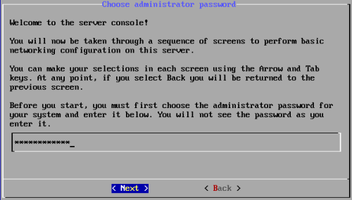
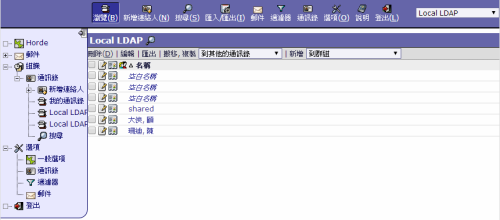

也紀念我們永遠的朋友 李士傑先生（Shih-Chieh Ilya Li）。
SME Server 全功能閘道伺服器建置與管理
作者簡介：顧武雄，Microsoft MVP、MCITP 與 MCTS 認證專家、台灣微軟 Technet、Tech Day、Webcast、MVA 特約資深顧問講師。目前個人 Linux 著作有：「Linux 企業現場應用系統」、「Linux 私有雲社群網路現場實戰」。
引言：今日筆者所要介紹的一款 SME Server 9.0 開放原始碼閘道伺服器，是如今國內外極為少有的全功能 IT 解決方案。它非常適用在中小型的企業網路架構之中，不僅可以幫老闆節省掉不少的建置成本，又可作為內外網路間、人員間協同作業時的安全管理平台。
簡介
在 IT 預算相當有限的中小型企業營運中，若是想要自行建置一部全功能的閘道伺服器，來提供內外用戶端使用者跨平台的網路連線服務，即便是聘請了 Linux 伺服器平台的專家，也得花費好一段漫長的時日，才能夠建構出一個像樣的伺服器，更別說是採用以 Windows Server 平台為主的商用伺服器建置了，需要投入的成本肯定是相當可觀的。
早在 SME Server 8.0 時，筆者就已經注意到它的存在，等了近一年多的時間，歷經了 8.1 版本，如今最期盼的 9.0 正式版本終於發行了。值得注意的是，8.0 版本是架構在 Centos 5.8 的 Linux 作業系統之上，而 8.1 則是 CentOS 5.10，至於最新的 9.0 版本則是 CentOS 6.5。
SME Server 除了提供 Linux、Windows 以及 Macintosh 跨平台用戶端的連線存取之外，主要提供的功能有伺服器命令主控台基礎管理介面、全 Web 化完整功能管理介面、檔案分享與印表機共用配置、安全閘道連線服務、基礎 Email 服務、Web Mail 網站服務、垃圾郵件與病毒過濾、遠端存取服務、符合工業標準的 LDAP 目錄服務、企業 Apache 網站服務（支援 LAMPP 環境）、軟體式磁碟陣列、USB 與磁帶 (Tape) 儲存裝置備份、系統自動更新服務以及延伸整合功能等等。其中在延伸整合功能的應用部分，像是與 Joomla CMS、HylaFax Server、VOIP PBX 以及相關網站內容篩選器套件的延伸整合等等。
如圖 1 所示便是 SME Server 的官方網站，您可以在它的首頁上看到有關於 SME Server 主要功能的介紹，並且還可以點選進入到它專屬的線上討論區，或是去下載相關的附加套件。
SME Server最新版本下載網址：
https://wiki.contribs.org/SME_Server:Download
▲圖 1：官方網站
基本安裝設定
關於 SME Server 的安裝，無論是哪個版本整個安裝設定的過程通常不會超過 20 分鐘。當我們使用所下載的 SME Server 9.0 ISO 檔案進行開機時，將會出現如圖 2 所示的安裝選單。在系統預設的狀態下，如果您已經連接了兩顆本地硬碟並且選擇第一個安裝選項，系統將會使用 RAID 1 的磁碟陣列模式來完成安裝。然而如果您所準備的本地硬碟僅有一顆或是大於兩顆以上，則可以改選取 [RAID and LVM installation options] 項目，來挑選使用無陣列模式 (No Raid)，或是以下幾種可選用的陣列模式：
- 三顆本地硬碟：預設將自動使用兩顆作為 RAID 1，一顆作為熱備援用途 (Hot-spare)。
- 四至六顆本地硬碟：預設將自動使用 RAID 5 並搭配一顆作為熱備援用途。
- 七顆以上本地硬碟：預設將自動使用 RAID 6 並搭配一顆作為熱備援用途。
在這種磁碟陣列的模式下，可允許在同一時間下兩顆硬碟的損毀狀態中，仍可以繼續維持系統的正常運作。
無論如何，只要是在正式運作的網路環境中，強烈建議您至少準備兩顆本地硬碟，以便讓系統能夠安裝在擁有基礎容錯架構下的硬體環境之中。在接下來的實戰講解中，筆者將以預設的 RAID 1 安裝模式，來介紹整個關於 SME Server 9.0 (64bit) 的建置與管理。
▲圖 2：開機選單
如同一般 CentOS 作業系統的安裝一樣，首先系統會詢問是否要測試來源的安裝媒體，為了節省時間我們通常都會選擇 [Skip]。接著會來到如圖 3 所示的 [Language Selection] 頁面挑選語系，目前這個版本仍建議選擇使用 [English]，若是選擇繁體中文語系，後續進入到 SME Server 主要的安裝設定中，可能會出現無法正常顯示的問題。
▲圖 3：語系選擇
完成了介面語系的選擇之後，還得選擇鍵盤所使用的語言模式，請選取 [us] 即可。來到如圖 4 所示的 [System to Upgrade] 頁面中，請選取 [Erase All disks, and perform a fresh install] 項目，以便進行完整的全新安裝作業。點選 [OK] 繼續。
▲圖 4：升級或安裝
在完成時區選擇了 [Asia / Taipei] 設定之後，將會出現如圖 5 所示的提示訊息，主要是提示我們包括了可卸除式的媒體裝置（例如：USB 隨身硬碟），都將會被這一次的全新安裝，重新劃分磁碟分割區以及格式化，也就是說所有現行資料都會全部被清除。確認後點選 [Write changes to disk] 繼續。
▲圖 5：安裝警告
成功完成基本的系統與程式安裝作業之後，將會出現如圖 6 所示的提示訊息。請點選 [Reboot] 按鈕，來重新啟動系統以便進入到 SME Server 初始化的組態配置，並且可以在一切就緒之後，透過它內建的更新功能，來進行線上更新程式的檢視與安裝。
▲圖 6：完成安裝
重新啟動系統之後，首先將會來到如圖 7 所示的 [Choose administrator password] 頁面，請正確輸入兩次的預設管理員帳戶密碼。此密碼千萬不可以忘記，因為後續安裝後的首次登入，將需要使用到它才能夠成功連線使用。

▲圖 7：預設管理員密碼設定
接著請輸入您公司對外的網域名稱。在如圖 8 所示的 [Primary domain name] 頁面之中，此網域將會成為您公司後續 Email 地址以及網站的尾碼。點選 [Next] 繼續。
▲圖 8：主要網域名稱設定
在如圖 9 所示的 [Select local network device] 頁面中，請正確選擇即將要作為內部網路連線的網路卡，也就是目前已連接公司內部網路的本機網路卡。點選 [Next] 繼續。
▲圖 9：主要網域名稱設定
來到如圖 10 所示的 [Select system name] 頁面中，則必須輸入此伺服器的名稱，至於命名格式可以包含英文字母、數字以及連接符號。必須特別注意的是此名稱在您目前的區域網路中必須是唯一的，否則將可能導致因衝突而讓用戶端連線失敗的問題發生。點選 [Next] 繼續。
▲圖 10：主機名稱設定
在如圖 11 所示的 [Local networking parameters] 頁面中，請為前面步驟中所指定的內部網路卡，設定一組尚未使用中的 IP 位址，以便後可以提供內部用戶端進行連線與存取。點選 [Next] 繼續。
▲圖 11：輸入本地主機 IP
緊接著在如圖 12 所示的 [Select local subnet mask] 頁面中，請輸入公司內部網路所使用的子網路遮罩。一般來說中小企業的網路環境，由於使用到的 IP 位址數量並不多，因此通常是輸入 255.255.255.0 即可。

▲圖 12：輸入子網路遮罩
在如圖 13 所示的 [Select operation mode] 頁面中，必須選擇此 SME 伺服器所要扮演的角色，依序分別是 [伺服器與閘道主機]、[內部伺服器與閘道主機]、[唯一伺服器角色]。在此若選擇 [伺服器與閘道主機] 角色，系統將提供您一部同時可以對內以及對外服務的伺服器，這包括外部 Email 與網站系統等等。然後如果您希望既能夠讓內部用戶端的使用者可以安全存取 Internet 以及內部資源，但卻又不希望開放任何對外的資源存取，這時候就可以選擇 [內部伺服器與閘道主機] 。至於如果公司網路中目前已經有專屬的閘道設備（例如：防火牆、VPN設備），則可以選擇唯一伺服器角色，以簡化管理與維護上的複雜度。
請注意！關於 SME 伺服器角色的選擇，無論是選擇 [Server and gateway] 還是 [Private server and gateway]，皆是需要準備好兩張網路卡，如此才能夠運行閘道的相關服務。
▲圖 13： 作業模式選擇
在如圖 14 所示的 [Select external access mode] 頁面中，必須選擇 SME 伺服器連線Internet 的方式。其中如果選擇第一項的 [dedicated]，即表示要透過公司目前現有的專線或 ADSL 的設備來直接連線 Internet，我將以此選擇來作為連線示範。至於如果選擇 [dialup] 則表示要使用傳統數據撥接的方式，一般公司應該已沒有在使用這種連線方式。點選 [Next] 繼續。
▲圖 14：Internet 存取方式設定
前面我們曾提到 SME 伺服器的三種角色，前兩種皆是需要有預先準備好兩張網路卡，否則到這個步驟時將會出現如圖 15 所示的錯誤訊息，而無法繼續前進接下來的設定。
▲圖 15：可能的錯誤訊息
若是系統有偵測到第二張網路卡，將會出現如圖 16 所示的 [Select external network device] 頁面。在此除非您還有連接第三張網路卡，否則唯一的外部網路卡的選擇，應該是像範例中的一樣，僅會有一張可用的網路卡可以選取。點選 [Next] 繼續。
▲圖 16：選取外部連線網路卡
來到如圖 17 所示的 [External Interface Configuration] 頁面中，必須選擇設定 IP 位址的方式。若是您的公司已經可以上網的 ISP 固定 IP 位址，對於內部網路中各類伺服器主機的使用，強烈建議採用靜態 IP 位址 (Use static IP Address) 的配置方式。至於一般的用戶端電腦以及各類行動裝置，則是採用 DHCP 的動態 IP 配置設定即可。點選 [Next] 繼續。

▲圖 17：指定外部網路卡IP配置方式
在如圖 18 所示的 [Select gateway IP address] 頁面中，請輸入目前公司連線 Internet 網路時，所使用的閘道 IP 位址。此位址有可能是外部真實的 IP 位址。點選 [Next] 繼續。
▲圖 18： 輸入閘道IP
解決了外部網路連線的 IP 設定問題之後，緊接著必須決定內部用戶端配置 IP 的方式。如圖 19 所示，在 [Select DHCP server configuration] 頁面中，如果在您目前的內部網路之中沒有任何現行的 DHCP 伺服器，就請選取 [Provide DHCP service to local network] 設定，讓 SME 伺服器來幫您解決公司內所有用戶端的 IP 配置需求，如此一來就不需要為每一台用戶端電腦或智慧裝置手動配置固定 IP 了。點選 [Next] 繼續。
▲圖 19： 是否提供DHCP服務
當決定要在 SME 伺服器上提供 DHCP 服務之後，緊接著便需要開始來設定 DHCP 服務的相關組態配置。在如圖 20 所示的 [Select beginning of DHCP host number range] 頁面，首先必須輸入動態 IP 位址分配時的起始 IP 位址，然後再點選 [Next] 完成結束 IP 位址的設定即可。必須注意的是對於這個 IP 位址範圍，請避開任何伺服器主機，或是特殊電腦所會使用到的可能固定位址，這包括了 SME 伺服器的內部網路卡 IP 位址。
▲圖 20：設定動態起始 IP
接著在如圖 21 所示的 [Corporate DNS server address] 頁面中，請輸入內部現有的 DNS 伺服器位址，以協助 SME 伺服器對於內部網路中所有電腦主機的解析。如果公司內部並沒有建置專用的 DNS 伺服器，則請先保留空白即可。點選 [Next] 繼續。
▲圖 21：輸入DNS伺服器位址
完成了上述有關於網域名稱、伺服器名稱以及各類網路 IP 的配置之後，將會來到如圖 22所示的 [Activate configuration changes] 頁面中，以確定是否要啟用前面步驟中的所有設定值。點選 [Yes] 即可。
▲圖 22：啟用主機設定
等待幾分鐘的系統啟用設定之後將會重新開機，如圖 23 所示便是來到 CentOS 的命令提示列，請輸入預設的 root 帳號以及安裝時所設定的管理員密碼。成功登入之後，將可以看到目前所使用的 SME Server 版本資訊。
▲圖 23：登入
當我們改用預設的 admin 帳戶登入之後，將會開啟如圖 24 所示的伺服器主控台視窗 (Server console)。在此可以很方便管理員對於伺服器本身，進行一些常用的管理作業，這包括了運作狀態檢查、系統組態修改、重新啟動或關機、磁碟陣列資訊檢視、開啟文字介面的伺服器管理、系統備份與還原等等。首先透過 [Check status of this server] 功能，就可以檢視到目前此系統已運行了多久時間。
▲圖 24：伺服器主控台
如圖 25 所示則是透過 [Manage disk redundancy] 功能，所檢視到的目前磁碟陣列狀態資訊。在這個範例中便是顯示了目前使用了兩顆硬碟，建立磁碟鏡像陣列的容錯備援機制 (RAID 1)。
▲圖 25：檢視磁碟陣列狀態
當點選 [Access server manager] 將會來到如圖 26 所示的頁面，它即將在您點選 [Yes] 之後開啟純文字模式的瀏覽器，來連線全功能的伺服器管理頁面。必須注意一旦進入後，若想要離開純文字模式的瀏覽器介面，只要按下 q 鍵即可。
▲圖 26：存取伺服器管理
如圖 27 所示便是純文字的瀏覽器連線登入頁面。請輸入安裝步驟中所設定的 admin 帳戶與其密碼。後續若想要離開選單畫面只要按下 [ESC] 鍵即可。
▲圖 27：文字管理介面登入
如圖 28 所示便是一個純文字的瀏覽器介面，您可以透過 [File] 的下拉選單，來選擇開啟任一網址，瀏覽文字網頁的過程之中，還可以透過相關的快速組合鍵，來進行相關網頁的瀏覽操作，例如您只要按下鍵盤左方位置的 Ctrl+B 就可以回到上一頁，若是按下 Ctrl+F 則可以前進下一頁。

▲圖 28：文字管理介面
請再一次回到伺服器主控台的選單中，您可以開啟如圖 29 所示的 [Reboot, reconfigure or shutdown this server] 頁面，來進行重新啟動、重新設定伺服器、關機。

▲圖 29：開關機管理
使用者與群組管理
在伺服器主控台中以文字瀏覽器的連線管理方式，終究無法像一般瀏覽器的連線方式操作方便。接下來筆者就要開始來講解與示範，正確配置此伺服器功能設定的各項技巧，整個操作過程都將以圖形化的瀏覽器連線方式來進行，並且還會示範幾個透過 Ubuntu Linux 以及 Windows 8.1，來做為用戶端電腦存取各項 SME Server 網路功能的小技巧。
在前面步驟的示範講解中，其實我們就已經看到透過瀏覽器連線 SME Server 的方法了，也就是連線至 https://SME Server位址/server-manager/ 的網址，然後完成帳戶密碼的登入即可。其中 SME Server 位址的輸入可以是 IP 位址、伺服器名稱或是完整網域名稱(FQDN)。不過必須注意的是，在系統預設的狀態之下是不允許管理人員經由外部網路，來連線登入 SME Server 管理中心網站，而是僅能從經由內部網路的連線，否則將會出現如圖 30 所示的錯誤訊息。
▲圖 30：預設外部無法連線
當我們經由內部網路中的任一部用戶端電腦瀏覽器，來連線 SME Server 管理中心網站時，將會出現如圖 31 所示的登入頁面，第一次的登入請以預設的 admin 帳號以及您所自訂的密碼來完成登入即可。點選 [Login]。
▲圖 31：連線登入 Web 主控台
如圖 32 所示便是 SME Server 的伺服器網站管理介面，在此您可能會發現有一些功能選單是顯示為中文，其實主要是因為此系統介面顯示是支援多國語系，但由於目前繁體中文尚未全面支援，因此才會有這種現象發生。不過沒有關係，您只要將目前瀏覽器所設定的語言優先順序進行修改，例如將 English 設定為第一順位，便可以讓整個介面以全英文的語系來呈現了。
▲圖 32：Web 主控台首頁
初步完成 SME Server 的安裝與登入，首先要進行的管理作業通常是建立新使用者帳戶以及群組，以便讓公司內部的使用者，後續可以經由內部網路甚至於網際網路，來連線存取公司網路中的各項資源。在系統預設的狀態下，僅會有一位內建的 admin 管理員帳戶。請在如圖 33 所示的 [使用者] 頁面中點選 [增加使用者帳號] 按鈕繼續。
▲圖 33：使用者帳戶管理
在如圖 34 所示的新使用者建立設定頁面中，除了帳戶名稱與電話欄位之外，其餘都是可以輸入中文的。其中 [電郵傳遞] 的設定部分，如果該名使用者對於所接收到的 Email，沒有特別要進行轉遞動作，就只要選擇預設的 [傳遞本地端電郵] 設定即可，否則就還必須特別輸入所要進一步轉遞的 Email 地址。最後如果您要授權給該名稱使用者，透過網際網路來連線登入公司的 VPN 網路，則可以在此授予 [VPN使用者端存取] 權限。
▲圖 34：增加使用者帳號
如圖 35 所示完成新使用者帳戶的建立之後，您必須點選此帳戶的 [重設密碼] 連結，以便讓該名使用者有一組密碼可以進行第一次登入。未來如果該名使用者留職停薪，則還可以將他的帳戶進行鎖定而無須刪除。
▲圖 35：完成新使用者建立
如圖 36 所示便是執行帳戶密碼重設時的顯示頁面，請在完成兩次密碼的輸入之後，點選 [儲存] 按鈕即可。
▲圖 36：修改密碼
接下來的示範筆者已將顯示介面切換為純英文的模式。請點選至 [Group] 頁面中並點選 [Add Group] 按鈕，來開啟如圖 37 所示的新群組建立設定頁面。在此請依序輸入新群組名稱、群組的用途描述以及勾選屬於此群組的成員清單。點選 [Add] 按鈕完成建立。
▲圖 37：新增群組
如圖 38 所示，便是成功完成一個名為 sales 新群組的建立，未來如果有新的業務同仁要加入此群組，只要回到此頁面並點選 [Modify] 連結來修改成員清單即可。值得注意的是後續有一些關於人員權限的賦予方式，也都可以直接授予給特定的群組。
▲圖 38：完成群組新增
網路芳鄰共用管理
對於公司內部網路中的用戶端使用者而言，最簡便存取公司檔案資源的方式，就是透過類似於網路芳鄰的功能來進行。在 SME Server 中的每一位使用者，除了皆有自己專屬的網路資料夾存放空間之外，也能夠存取其它有被賦予權限的網路共用資料夾（例如：業務部資料夾）。想要提供這一項便利的功能給使用者之前，我們必須先點選至位在 [Configuration] 區域中的 [Workgroup] 點頁面，在此必須輸入將要在網路芳鄰中顯示的工作群組名稱、伺服器名稱。至於其它兩項功能則可以暫時先設定為 [No] 即可。點選 [Save]。
▲圖 39：網路工作群組設定
一旦完成了 SME Server 工作群組的建立之後，內部用戶端使用者無論是 Windows 還是 Linux，皆可以在如圖 40 所示的 [網路] 資源瀏覽中，找到 SME Server 的伺服器名稱。請連續點選開啟它。
▲圖 40：Windows 網路芳鄰
在開啟 SME Server 的共用資源內容之後，使用者除了可以依據權限設定，來存取各類由管理員所建立的共用資料夾之外，最重要的是還會有屬於自己的儲存空間，那就是以自己帳戶名稱所建立的個人資料夾。如圖 41 所示，在此將可以存入各類型的檔案，包括了 Office 文件檔、照片檔、影音檔等等。
▲圖 41：存取共用資料夾
請注意！如果您需要限制每一位使用者在 SME Server 中的資料儲存空間，只要在 [Collaboration] 區域中點選至 [Quotas] 頁面中，然後便可以對於目前任一的帳戶名稱，察看到他目前已使用的空間大小，以及修改所要警告與限制的儲存量大小。
郵件組態管理
在 SME Server 中有一項相當重要的功能服務，那就是電子郵件伺服器 (Mail Server) 功能，更重要的是它不僅提供一般 SMTP、POP3 以及 IMAP 的 Email 收發服務，還提供了基礎垃圾郵件的過濾功能以及病毒程式的防治服務。因此接下來我們就要來完成一連串有關 Mail Server 的組態配置，以便實際符合自家公司的郵件管理需求。首先請點選至位在 [Configuration] 區域中的 [Email] 頁面。如圖 42 所示，在此可以看到共用有四大類的郵件組態可能需要調整，依序分別是 Email 存取設定、Email 篩選設定、Email 收件設定以及Email 傳遞設定。請先點選第一類的 [Change e-mail access settings] 按鈕繼續。
▲圖 42：郵件服務設定
在如圖 43 所示的 [E-mail settings] 頁面中，在預設的狀態下 POP3 與 IMAP 的電子郵件信箱服務，皆只允許來自內部網路的用戶端進行連線存取，而 Web Mail 連線功能則是關閉的。一般正常的使用需求，都會將這兩種信箱服務設定，修改成允許內部與外部的網路安全存取，以及開放使用者可以透過 HTTPS 的安全連線方式，來使用 Web Mail 的網站收發信功能。完成修改後請點選 [Save]。
▲圖 43：郵件存取方式設定
接下來我們點選 [Change e-mail filtering settings] 按鈕，來開啟如圖 44 所示的 Email 篩選設定頁面。在此建議您最好能夠將其中的 [Virus scanning] 與 [Spam filtering] 皆設定成 [Enabled]，以便能夠過濾掉各種不需要的垃圾郵件與病毒郵件。然後再來決定垃圾郵件判別的敏感度 (Spam sensitivity) 設定值，此設定一般都會先暫時設定成中度等級 (Medium)，等到觀察一段時間之後，再根據用戶端接收 Email 的情況，再來決定是否需要往更上一層級或向下一層級進行調整。目前垃圾郵件篩選的層級共有五級，當然啦！您也可以自訂標示垃圾郵件主旨以及退件的等級。在預設的狀態下只要被判定為垃圾的郵件，其主旨將會自動被標示 [SPAM] 關鍵字。
▲圖 44：垃圾郵件篩選設定
緊接著點選 [Change e-mail reception settings] 按鈕，來進入到如圖 45 所示的 Email 收件設定頁面。此功能並非是必要的設定，只有在需要變更預設 Email 收件組態時才需要，例如您想要變更上班時間以及下班時間時的自動收件頻率，預設皆是每隔 15 分鐘檢查一次新郵件，太過於頻繁可能會讓一些不是使用行動網路吃到飽方案的使用者，增加其行動數據網路連線的流量問題。
▲圖 45：郵件接收設定
接著請點選 [Change e-mail delivery settings] 按鈕，來進入到如圖 46 所示的 Email 傳遞設定頁面。在此除了可以設定針對外部 Internet 使用者，寄給公司內未知的收件人時的處裡方式之外（預設 = 自動退信），還可以進一步決定是否要授權給特定的 SMTP 伺服器進行轉信，或是將所有寄送的郵件轉送到其它已授權給此伺服器的 SMTP 服務，然後再寄送到目的地使用者信箱之中。
▲圖 46：郵件傳遞設定
前面我們曾介紹過郵件服務可以結合啟用 ClamAV 的掃毒功能，來防範可能夾帶病毒程式的惡意郵件進入到公司內部網路之中。其實 ClamAV 整合 SME Server，還可以幫我們掃描伺服器中的檔案系統。如圖 47 所示，我們只要開啟 [Antivirus] 設定頁面，就可以決定自動掃描檔案系統的週期（例如：每天），以及決定是否要自動隔離受感染的檔案。點選 [Save] 儲存設定。
▲圖 47：防毒功能設定
連線使用VPN網路
對於企業行動工作者而言提供遠端存取的便利服務，將有助於改善協同商務的效率。其中最重要的除了 Email 的收發管理之外，就是屬於 VPN 網路的使用了。我們可以從 [Security] 區域中點選開啟如圖 48 所示的 [Remote access] 設定頁面。在此首先您可以決定允許經由 PPTP 存取 VPN 網路的連線數量，若是設定為 0，即表示關閉此功能。接著可以決定是否要限制遠端使用者存取內部網路時的範圍限制，必要的話、可以透過網路以及子網路遮罩的輸入來加以限制。
在 [Secure Shell Settings] 區域中，則可以決定是否要開放讓管理者能夠經由遠端來開啟 SSH 的連線工具存取伺服器，其目的在於方便管理人員可以人在外部網路時，仍然可以對於伺服器進行遠端診斷以及故障排除。最後在 [FTP Settings] 設定部分，則可以選擇是否要啟用 FTP 服務的功能，讓人員在外部網路時可以透過像是 FileZilla 的用戶端程式，來進行檔案的上傳或是下載。若打算開放 FTP 遠端存取服務，請將 [FTP access] 設定為 [允許公開存取]，以及將 [FTP password access] 設定為 [Accept password from anywhere] 即可。
▲圖 48：遠端存取管理
完成了 VPN 網路的啟用設定之後，接下來我們就可以嘗試透過一部位在外部網路的 Windows 8.1 電腦，來建立 VPN 網路的連線登入。首先請如圖 49 所示開啟 [網路和共用中心] 介面，然後點選 [Setup a new connection or network] 連結繼續。
▲圖 49：Windows 8.1 網路和共用中心
在如圖 50 所示的 [Choose a connection option] 頁面中，請在選取 [Connect to a workplace] 項目之後，點選 [Next] 按鈕。接著系統可能會詢問您是否要使用現行的連線還是建立新的連線，請點選建立新的連線繼續。
▲圖 50：選擇連線需求
在如圖 51 所示的 [How do you want to connect] 頁面中，請選取 [Use my Internet connection (VPN)] 設定，來建立與 SME Server 的 VPN 網路連線。接著您需要設定連線的位址，也就是SME Server外部網路卡 IP 位址，或是現有其它閘道設備的 IP 位址，您可以選擇輸入 IP 位址或是完整網域名稱 (FQDN)。點選 [Create] 按鈕完成新連線建立。

▲圖 51：選擇 VPN 連線方式
完成 VPN 網路連線的設定之後，接下來使用者只要點選位在桌面右下方的網路圖示，便會開啟如圖 52 所示的右側窗格。在此將可以看到我們所建立的 VPN 網路連線項目，請點選它繼續。
▲圖 52：選擇網路連線
緊接著將會出現如圖 53 所示的身份驗證視窗，請輸入在 SME Server 中有授予 VPN 網路權限的使用者帳戶與密碼。點選 [OK]。
▲圖 53：輸入帳號密碼
一旦成功連線了 SME Server 的 VPN 網路之後，將同樣可以在如圖 52 所示的 [Network] 頁面中，檢視到已連線的 VPN 網路。後續如果想要中止 VPN 連線，只要再一次點選該連線項目，然後再點選 [Disconnect] 即可。
▲圖 54：成功連線 VPN 網路
過去許多 VPN 網路的用戶端使用者，經常會遭遇到一個問題，那就是一旦連線了公司的 VPN 網路之後，雖然可以開始存取公司內網路的各項資源，但奇怪的是卻無法連線網際網路。其實這個問題與閘道 IP 的設定有關，解決方法請先在目前所建立的 VPN 網路上，按下滑鼠右鍵點選 [Properties] 來開啟如圖 55 所示的頁面，然後在選取 [Internet Protocol Version 4 (TCP / IPv4)] 項目之後，點選 [Properties] 按鈕繼續。
▲圖 55： VPN 連線屬性
在如圖 56 所示的 [IP Settings] 頁面中，請將 [Use default gateway on remote network] 設定勾選。點選 [OK] 完成設定即可。再試試是否已經能夠連線網際網路了。
▲圖 56：IP 組態設定
在 VPN 網路的連線狀態下，如果遠端使用者想要查看目前所配置的 IP 位址資訊，以及所使用的 VPN 網路通訊協定資訊，只要在連線的 VPN 網路圖示上，按下滑鼠右鍵並點選 [Status]，即可開啟如圖 57 所示 [Details] 的完成資訊頁面。在此不僅可以看到遠端用戶端電腦與伺服器各自的 IP 位址，還能夠知道此 VPN 網路所使用的通訊協定以及加密驗證方式。
▲圖 57：連線資訊檢視
在確認已經完成 VPN 網路的連線並且取得內部 IP 位址之外，在遠端用戶端電腦上，最好能夠進一步開啟如圖 58 所示的命令提示介面，透過 Ping 命令來測試一下與公司內部的其它電腦通訊是否正常。
▲圖 58：連線內部網路測試
人員郵件收發管理
在前面有關於伺服器設定的講解中，我們已經啟用了郵件伺服器的相關設定，因此接下來我們就可以透過任何的收發信軟體，在內部或是外部用戶端電腦上來進行 Email 信箱的連線。在此筆者以一款內建於 Ubuntu Linux 作業系統中的 Thunderbird 軟體來作為操作示範。如圖 59 所示便是 Thunderbird 的個人 Email 收發管理介面，在 [帳號] 區域中請點選 [建立新帳號] 繼續。
▲圖 59：Thunderbird 個人郵件管理
如圖 60 所示便是 [郵件帳號設定] 頁面，在此除了需要輸入識別用的中文姓名、電子郵件地址以及密碼之外，還必須指定收件與發信的服務類型以及主機名稱，至於通訊埠、SSL 以及認證方式皆採用自動偵測即可。完成設定之後，可以先進行連線測試，只有在通過連線測試時才能夠點選 [完成] 按鈕。
▲圖 60：郵件帳號設定
成功完成 Email 伺服器的登入連線之後，您可以立即點選 [寫信] 圖示來測試對內以及對外的發信測試，等到內部使用者與外部連絡人都收到 Email 之後，再透過這一些信箱進行 Email 的回覆即可，若是都能夠收到 Email 即表示 SME Server 的郵件服務是在正常運行之中。
▲圖 61：郵件收發測試
關於 SME Server 的用戶端使用者，不僅可以透過任何的郵件收發軟體（包括 Office Outlook、Outlook Express 等等），來進行個人 Email 信箱的收發信管理，若是 SME Server 有特別啟用 Web Mail 功能，則使用者也可以透過更方便的網站信箱服務，以瀏覽器開啟如圖 62 所示的 Web Mail 登入頁面。使用者只要在網址列輸入 https://SME Server位址/webmail/ 即可。在此除了需要輸入登入的帳戶密碼之外，還可以在登入之前挑選想要使用的介面語系。點選 [登入]。
▲圖 62：Web Mail登入
如圖 63 所示便是 SME Server 的 Web Mail 網站操作介面。在這裡除了可以進行一般常見的收發信、通訊錄管理之外，最棒的就是它可以直接讓使用者存取到本地端的 LDAP 人員群組名錄，有效解決了企業公用通訊錄的使用需求。

▲圖 63：本地LDAP帳戶管理
如圖 64 所示頁面即是 [寫信] 的編輯範例。在此除了可以自訂編碼方式、拼字檢查、上傳附件檔案之外，還可以決定是否要連同附件一同完成寄件備份，此外更可以決定是否要讓附件檔案僅顯示超連結，來供收件者點選後才進行下載，有效大幅節省伺服器的可用儲存空間。點選 [通訊錄] 繼續。
▲圖 64：郵件寄送測試
在如圖 65 所示的 [通訊錄] 視窗之中，除了可以從使用者個人的通訊錄來挑選收件人、副本以及密件副本之外，也可以從公司的通訊錄 (Local LDAP) 來挑選人員或群組。完成設定請點選 [確認]。
▲圖 65：挑選收件者
如圖 66 所示，便是執行傳送郵件之後，收件者所收到的 Email 範例，從中可以發現其中的附件檔案已被轉換為超連結位址，使用者必須點選附件中的伺服器超連結，來下載所需要的檔案。
▲圖 66：收件範例
其它常用功能的使用
關於 SME Server 的系統更新，它本身已經內建了專屬的更新功能，管理員只要點選位在 [Configuration] 區域中的 [Software Installer] 項目，即可開啟如圖 67 所示的軟體更新管理頁面。在此預設的狀態下更新檢查功能已是在啟動狀態，您可以點選 [List available updates] 按鈕，查看目前可用的軟體更新清單。

▲圖 67： 軟體更新管理
在如圖 68 所示頁面的 [Update available] 欄位之中，便可以看到目前所有可下載與更新的軟體套件，您只要在連續選取多個要更新的項目之後，再點選 [Install selected updates] 按鈕，即可進行指定套件的更新作業。
▲圖 68： 軟體更新安裝
本文最後相信有一項功能是所有讀者都必須知道的，那就是如圖 69 所示位在 [Administration] 區域中的 [Reboot or shutdown]。在此頁面中您將可以從下拉選單之中，挑選所要執行的操作，依序分別是重新啟動 (Reboot)、重新設定 (Reconfigure)、關機 (Shutdown)。確認選擇後點選 [Perform] 按鈕即可。
▲圖 69：關機管理
結論
SME Server 是一套筆者在國內相當推薦的優質網路閘道方案，它不僅在伺服器安裝與管理介面設計上，讓即便不熟悉 Linux 的網管人員也能夠輕鬆上手，對於不同用戶端使用者的資源存取需要，也能夠在一個高度安全的基礎平台上，輕鬆完成團隊的任務以及使命。不過可惜的是如今國內只有鮮少的企業 IT 知道，期望能夠藉由此專欄的技術分享，讓更多有心一同打造優質開放原始碼網路環境的 IT 人，可以知道更多學習更多發揮更多創造更多。
專欄總覽


E-Mail：contact@openfoundry.org Address：台北市南港區研究院路2段128號 中央研究院資訊科學研究所 . 隱私權條款. 使用條款